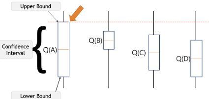
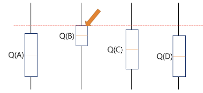
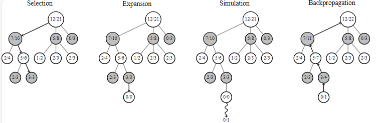
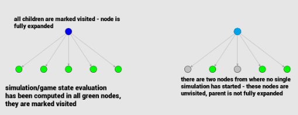
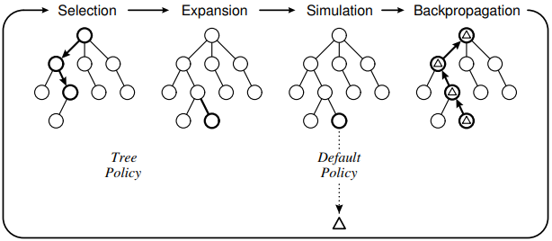

v.
Overview
- Monte Carlo Method: what is it, how does it work
- Search Strategy: expected return, upper confidence bound
- Monte Carlo Tree Search: precess, UCB for Trees (UCT)
- Challenges in Big Games
Monte Carlo Methods
Expected Value
- Let $X$ be a random variable
- Let $p(x)$ be the probability that $X$ has value $x$
- Then, the expected value of $X$ is
- \[ \sum_x{xp(x)} \]
Expected Value - Example
- Suppose that a slot machine pays out
- $£1$ with probability $0.05$,
$£5$ with probability $0.03$,
$£10$ with probability $0.02$,
nothing with probability $0.9$. - $£1$ with probability $0.05$,
- The expected payout is
- $1$$\times$$0.05$$+$$5$$\times$$0.03$$+$$10$$\times$$0.02$$+$$0$$\times$$0.90$$=$$0.40$
- On average, if you play the machine $N$ times, you will win $£0.40*N$
"Randomness" in Computing
- Digital computers are deterministic, so there's no such thing as true randomness
- - Cryptographically secure systems use an external source of randomness, e.g. atmospheric noise, radioactive decay, etc.
- What we actually have are pseudo-random number generators (PRNGs)
- A PRNG is an algorithm which gives an unpredictable sequence of numbers based on a seed
- Sequence is uniformly distributed, i.e. all numbers have equal probability
- Seed is generally based on some source of entropy, e.g. system clock, mouse input, electronic noise
Monte Carlo Methods
- In computing, a Monte Carlo Method is an algorithm based on averaging over random samples
- The average over a large number of samples is a good approximation of the expected value
- Used for quickly approximating quantities over large domains
- Generally designed to converge in the limit
- an infinite number of samples would give an exact answer
- As the number of samples increases, the accuracy of the answer improves
- Applications in physics, engineering, finance, weather forecasting, graphics, ...
Monte Carlo Method Example

$\frac{inside\_point\_number}{total\_number}=\frac{\pi}{4}$
Search Strategy
The Multi-armed Bandit Problem
- Pull one arm at a time
- Each arm has a different chance to win
- Random/noisy reward signal
- Pulling any arm either wins or loses
- Maximise the total reward after each move (expected return)
Expected Return
- Action value $\implies$ to decide which arm is the best action ($a$) we define the value of taking the action as: $q_t(a)=E(R_t \vert A_t = a)$
- - Maximise the expected reward ($R_t$) by selecting the action ($a$) with the highest action-value ($q_t(a)$)
- Action value estimate $\implies$ since the action value is unknown to the agent it can be estimated by: $Q_t(a)=\frac{\sum_{T=0}^{T=t} R_T}{N_t(a)}$
- - The sample-average: the total reward ($\sum_{T=0}^{T=t} R_T$) is divided by the number of actions ($N_t(a)$)
Exploration vs Exploitation Dilemma
- Greedy Action: By choose the largest estimated value, the agent exploits its current knowledge.
- Non-Greedy Action: Do not choose the largest estimated value and hope to gain more information about the other actions.
- Exploration: It allows the agent to improve its knowledge about each action. Hopefully, leading to a long-term benefit.
- Exploitation: Try to get the most reward for short-term benefit. A pure greedy action selection can lead to sub-optimal behaviour.
A dilemma occurs between exploration and exploitation because an agent can not choose to both explore and exploit at the same time.
Upper Confidence Bound (UCB)
- Balance exploitation with exploration
- Inherent uncertainty in the accuracy of the action-value estimates
- Select the arm that maximises:
- $A_t=argmax_a\left(Q_t(a)+c\sqrt{\frac{ln(t)}{N_t(a)}}\right)$
- where $c$ is a trade-off between exploration and exploitation. If $c=0$ then you only consider $Q_t(a)$ (no exploration); if $c→\infty$ then you only consider exploration term (UCB).
- Select the action that has:
- the highest estimated action-value plus the UCB exploration term.
UCB with Confidence Interval
$Q(A)$ represents the current action-value estimate for action $A$.
The brackets represent a confidence interval which says that we are confident that the actual $Q(A)$ lies somewhere in this region.
UCB Example
optimistically pick action $A$ to either get the highest reward or learn about an action we know least about. UCB Example (cont.)
Select the action $B$ since $Q(B)$ has the highest UCB, even though the confidence interval is small. Monte Carlo Tree Search
Game Decision Revisited
%%{init: {'theme': 'dark', 'themeVariables': { 'darkMode': true }}}%%
graph TD
A(Current Position) -- Move A --> B(PA)
A(Current Position) -- Move B --> C(PB)
A(Current Position) -- Move C --> D(PD)
C -. playout policy .-> E(Terminal: win=1, lose=0)
E -- Reward for Move B --> C
PB to Terminal (dash line) represents the (possibly long) playout policy. Reward feedbacks to PB.
Minimax algorithm requires the expansion of whole game tree. So we may:
- expand the game tree only up to certain threshold depth $d$
- prune the game tree using Alpha-Beta Pruning Algorithm
Monte Carlo Tree Search (MCTS) Process
%%{init: {'theme': 'dark', 'themeVariables': { 'darkMode': true }}}%%
graph TD
A(Current Position) -- Move A --> B(PA)
A(Current Position) -- Move B --> C(PB)
A(Current Position) -- Move C --> D(PC)
C -. tree policy .-> E(PD)
C -- Move D --> E(PD)
E -. default policy .-> F(Terminal: win=1, lose=0)
F -- Reward --> C
F -- Reward --> E
- Now, the playout policy to select the "possible" best move include 2 steps:
- Select node PD (Move D) via tree policy: UCB
- From PD to Terminal using the default policy: uniform random
- Reward feedbacks to both PB and PD
UCB for MCTS - UCT
- Iteratively build a partial search tree, one node per iteration
- Monte Carlo (randomness) evaluation for non-terminal nodes
- Asymmetric: balance between exploitation and exploration with unbalanced tree topology
- Anytime: can do as many (or as few) iteration as we want
- Aheuristic: no prior knowledge required except rules
$UCT(v_i,v)=\frac{W_{v_i}}{N_{v_i}}+c\sqrt{\frac{log(N_v)}{N_{v_i}}}$
$c$: exploration parameter (theoretically $=\sqrt{2}$) $v_i$: $i$-th child node of node $v$
$W_{v_i}$: the number of wins from node $v_i$
$N_{v_i}$: the number of visits to node $v_i$
$N_v$: the number of visits to it's parent node $v$
How does $N_{v_i}$ affect the UCT value?
Why MCTS?
- MCTS simulates the process how we play games: we do not list all moves but the "most possible" moves of the opponent after we make our "most possible" moves and so on...
- Effectively search a large "space" without prior knowledge
- Estimate the value of each possible move by random simulation
- Move towards the best strategy
MCTS Process
Each iteration of MCTS includes 4 steps:
Node Status
Fully-expanded: visited (reward evaluated) all children nodes at least onceNot fully-expanded: didn't visit all children nodes, further expansion is possible!
Each node contains information about win rate, number of visits, ... 
MCTS Process - Selection
- 4 3 different type of nodes:
- -unvisited: never been evaluated before
-fully-expanded: as explained above (all children nodes have been visited)
-not fully-expanded: visited at least once, but not all children has been visited - -unvisited: never been evaluated before
- As the game begins, all nodes are unvisited - randomly pick one child of the root to simulate.
- Then, which node to choose?
- Choose the one with biggest win rate (Number of Win/Total Number), is this a good choice?
MCTS Process - Selection (cont.)
- Which node to choose?
- Choose the one with biggest win rate (Number of Win/Total Number), is this a good choice?
- No! As the same node will be picked up all the time if it wins in the first random simulation.
- The selection strategy:
- - keep on selecting the best child node until reaching the leaf node
- $UCT$ is a good measure for the selection
- - keep on selecting the best child node until reaching the leaf node
MCTS Process - Expansion
- When it can no longer apply $UCT$ to find the successor node, expand the game tree by appending all possible children nodes from the leaf node.
- After Expansion, the algorithm picks ONE child node arbitrarily.
- Empty statistics for the picked node - expanded node
MCTS Process - Simulation
- Simulates entire game from the picked node until it reaches the resulting state (playout process):
- using Monte Carlo method to randomly simulate the game quickly (light playout)
- applying complicated heuristics or evaluation functions (heavy playout)
- Evaluate the game state to figure out which player os has won. For a given player it's
- - either win (1) or lost (0)
MCTS Process - Backpropagation
- Assign the simulated results as the statistics of the picked node
- Update the information of the parent of the picked node
- Traverse upwards to the root and increments visit score for all visited nodes
- The whole game tree has been updated
MCTS Process Recall
MCTS keeps repeating these four phases until
some fixed number of iterations
or some fixed amount of time
MCTS Process Algorithm
source: https://www.researchgate.net/publication/235985858_A_Survey_of_Monte_Carlo_Tree_Search_Methods
MCTS: Tic-Toc-Toe
MCTS: Mario Brothers

MCTS can be used to deal with problems
in very large, complex game domains
Challenges for Tree Search
in Real-Time Domains
- Many more decisions per game than most turn-based games
- Hence state space is enormous even if branching factor is small
- 19x19 Go game has of the order $10^{171}$ states
- Physical Travelling Salesman Problem has of the order $10^{1556}$ states
- Time budget is restricted (milliseconds per decision)
Conclusion
- MCTS is a powerful general-purpose AI technique
- - Asymmetric, Anytime, Aheuristic
- MCTS has proven successful in several challenging classes of games
- - games of imperfect information
- commercial mobile games
- real-time games - - games of imperfect information
- It shows promise in many other games and non-game applications
Further Reading
A Survey of Monte Carlo Tree Search Methods
in IEEE Transactions on Computational Intelligence and AI in Games,
vol. 4, no. 1, pp. 1-43, March 2012,
doi: 10.1109/TCIAIG.2012.2186810.
Questions?